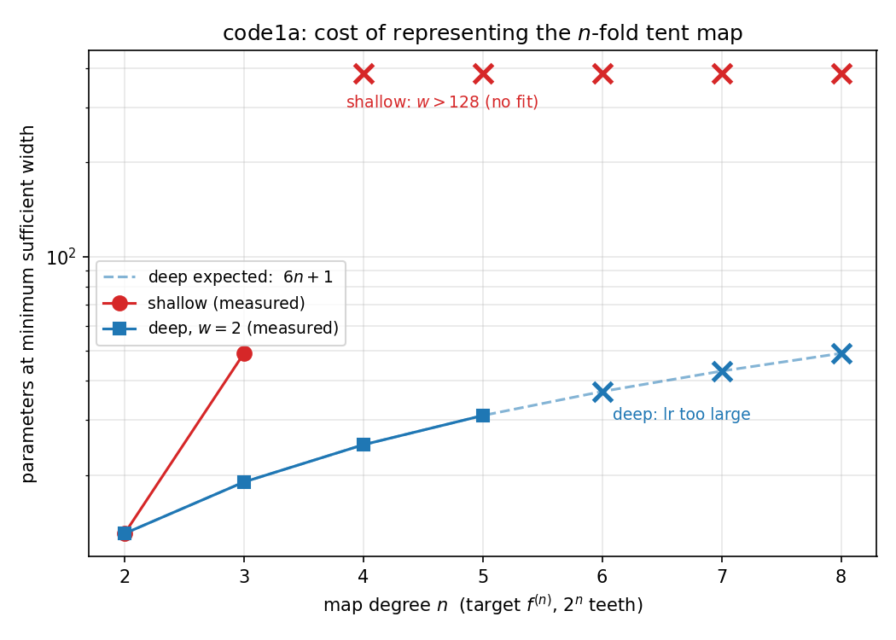
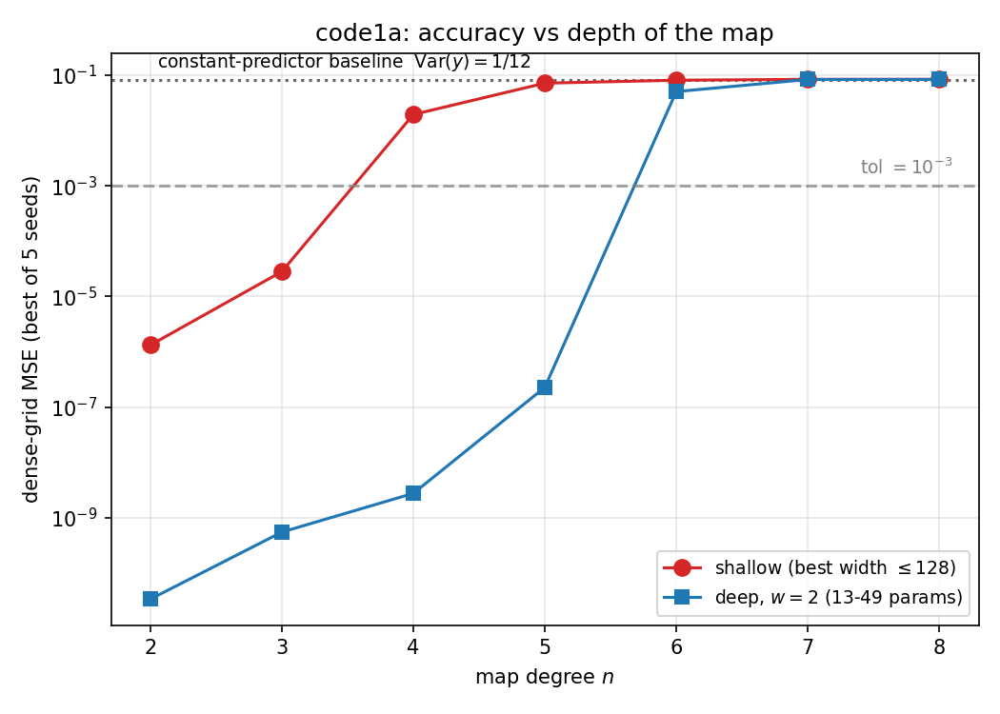
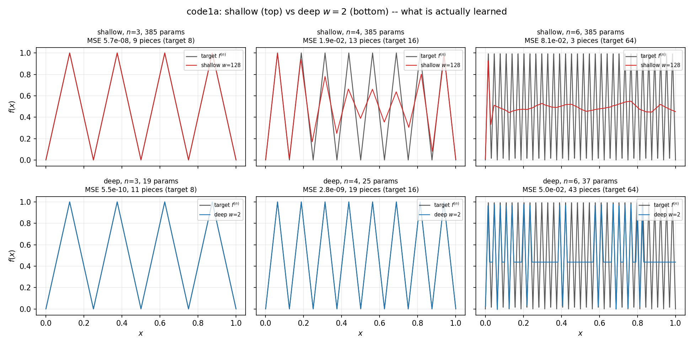

Folding by Depth
Shouvik Sur ![]()
1 Introduction
Objective: This exercise demonstrates the difference between the width and depth of a multi-layer perceptron (MLP) in controlling its ability to learn iterated maps that produce non-injective relationships.
Outcome: By contrasting the training of a shallow MLP (one hidden layer) and a deep MLP (\(n\) hidden layers) on the \(n\)-fold iterated tent map, we show that depth attains the learning objective with the number of trainable parameters growing linearly in \(n\), whereas the shallow network fails to train at any width up to 128 for \(n \ge 4\) despite possessing more than sufficient representational capacity. Therefore, depth is the more efficient knob in two distinct ways:
- it needs exponentially fewer parameters to represent the target (explicitly demonstrated by the parameter counts at \(n = 2, 3\));
- it remains trainable in a regime where the width-matched shallow network is defeated by the vanishing gradients known for this function class.
2 Architectures
The Map: The tent-map \(f: [0,1] \to [0,1]\) is given by \[ f(x) = 1 - |1 - 2x|. \tag{1}\] Thus, it is a \(2\)-to-\(1\) map. Iterating it \(n\) times converts it to a \(2^n\)-to-\(1\) map, \[ f_n(x) = 1 - |(2^n x \; \text{mod} \; 2) - 1| \tag{2}\] while preserving the definition of the domain and range.
Let \(x\) be uniform on \([0,1]\). Each of the \(2^n\) linear pieces of \(f_n\) maps an interval of length \(2^{-n}\) linearly onto the whole of \([0,1]\). Conditioned on \(x\) falling in a given piece, \(y = f_n(x)\) is therefore uniform on \([0,1]\), and so is \(y\) unconditionally. A uniform variable on \([0,1]\) has mean \(1/2\) and variance \[
\int_0^1 \left(y - \tfrac12\right)^2 dy = \frac{1}{12} \approx 8.33\times 10^{-2},
\] independent of \(n\). A network that has collapsed to the constant \(1/2\) scores exactly this MSE, and such a network has one linear piece. This is the signature “8.33e-02, pieces = 1” that appears in the failed rows of the tables below.
2.1 Two types of MLPs
Shallow MLP: The shallow MLP contains one hidden layer of width \(w\). It can be shown by information theoretic arguments that in order for this network to represent \(f_n\), the number of nodes/neurons \(w \geq 2^n-1\). This leads to an exponential scaling of the number of trainable parameters in the shallow MLP with \(n\).
Deep MLP: The deep MLP contains \(N\) hidden layers, each of width \(w\). It can be shown by the same type of arguments as above that if \(N \sim n\), then \(w = \mathcal{O}(1)\). Therefore, the number of trainable parameters in the deep MLP scales linearly with \(n\). Here, in order to easily contrast the deep-MLP with its shallow counterpart, we will fix \(w=2\) in the former.
On \([0,1]\) the shallow network computes \[ \phi(x) = c + \sum_{j=1}^{w} s_j\, \sigma(W_j x + b_j), \] where \(\sigma\) is the ReLU, \(W_j\) and \(b_j\) are the hidden weight and bias of unit \(j\), \(s_j\) its output weight, and \(c\) the output bias. Unit \(j\) is linear over \([0,1]\) unless its hinge \(a_j = -b_j/W_j\) lies inside the interval. At \(a_j\) it changes the slope of \(\phi\) by \(J_j = s_j |W_j|\), whether it is right-active (\(W_j > 0\), zero to the left of \(a_j\)) or left-active (\(W_j < 0\), zero to the right of \(a_j\)).
The target \(f_n\) has \(2^n - 1\) interior kinks at \(x = m/2^n\), \(m = 1, \dots, 2^n - 1\), and at each kink its slope flips between \(+2^n\) and \(-2^n\), i.e. jumps by \(\pm 2^{n+1}\). Each unit supplies at most one kink, so \(w \geq 2^n - 1\). This is the bound quoted above.
This bound cannot be attained. Suppose \(w = 2^n - 1\). Then every unit must sit on its own kink and carry that kink’s jump, \(J_j = \pm 2^{n+1}\). On the first piece, \(0 \leq x < 2^{-n}\), the right-active units are all zero, and each left-active unit contributes the slope \(-J_j\). The slope of \(\phi\) there is therefore \(-\sum_{j \in L} J_j\), where \(L\) is the set of left-active units. This sum is an integer multiple of \(2^{n+1}\), so it can never equal the required slope \(2^n\). One more unit is necessary, and \(w \geq 2^n\).
The bound \(w = 2^n\) is attained by putting the extra hinge at \(x = 0\): \[
f_n(x) = 2^n \sigma(x) + \sum_{m=1}^{2^n-1} (-1)^m\, 2^{n+1}\, \sigma\!\left(x - \frac{m}{2^n}\right), \qquad x \in [0,1].
\] The sign \((-1)^m\) makes the slope fall by \(2^{n+1}\) at the peaks (\(m\) odd) and rise by \(2^{n+1}\) at the valleys (\(m\) even). For \(n = 1\) this reads \(f(x) = 2\sigma(x) - 4\sigma(x - 1/2)\), which is exactly the tent block wired into every layer of the deep network below. The measured minimum width at \(n = 2\) in the code1.py table is \(w = 4 = 2^2\), in agreement with the bound.
2.2 Initial weights
While the \(n\)-scaling of the number of parameters in the two MLPs can be determined a priori, a successful training of these networks crucially depends on the choice of the initial weights. This is demonstrated by code0.py. This script contains a straightforward comparison between the two types of MLP architectures discussed above with the initial weights in both networks assigned randomly. We find that * the deep MLP fails to train with the test accuracy hovering around the variance in the input data; * the shallow MLP trains only at a few select widths, depending on the seed fed to the random number generator.
The Problem: The main challenge here is to use the ReLU network to represent a piecewise continuous function with many segments (controlled by \(n\)). In order for a ReLU-based approximator, \(\phi(x) = s_0 x + \sum_j s_j \sigma(x - a_j)\) with \(\sigma(x)\) being the ReLU function, to be sensitive to the segmentations in \(f_n(x)\), it must possess a sufficient number of ReLU-hinges or breakpoints within the interval \(x \in [0,1]\). The naive random initialization of the networks prevents this from happening: if both the weight (\(W_j\)) and the bias (\(b_j\)) acting on the \(j\)-th node/neuron is sampled from a uniform distribution, then the location where \((W_j x + b_j)\) vanishes, \(x=-b_j/W_j\), typically lies outside \([0,1]\). The “naive” algorithm in code0.py fails because of this reason.
Solution-Part 1: To fix this issue, in code1.py, we deterministically assign the initial weights and biases in such a way that all the breakpoints of \(\phi(x)\) lie within \([0,1]\). In fact, to help the gradient descent find the desired solution, we initiate the network weights and biases in the vicinity of the expected solution as follows.
- Shallow MLP: We initialize as
k = torch.linspace(0.0, 1.0, w + 2)[1:-1]
sign = torch.where(torch.arange(w) % 2 == 0, 1.0, -1.0)
W = 2.0 * sign
self.layers[0].weight.copy_(W.unsqueeze(1))
self.layers[0].bias.copy_(-W * k)
self.layers[2].weight.normal_(0.0, 1.0 / max(w, 1) ** 0.5)
self.layers[2].bias.zero_()Here, k = torch.linspace(0.0, 1.0, w + 2)[1:-1] creates an evenly spaced grid of \(w+2\) points from \(0\) to \(1\), and then slices off the boundaries (1:-1 removes the \(0.0\) and \(1.0\)). These are the target breakpoint locations \(a_j\) for the \(w\) hidden units. They are guaranteed to be strictly inside the domain. The subsequent lines,
sign = torch.where(torch.arange(w) % 2 == 0, 1.0, -1.0)
W = 2.0 * sign
self.layers[0].weight.copy_(W.unsqueeze(1))generates a weight vector \(\mathbf{W}\) of \([+2.0, -2.0, +2.0, -2.0, ...]\). Note that the sign of \(W_j\) determines the direction of the ReLU: \(\sigma(2x + b_j)\) are “right-active”; \(\sigma(-2x + b_j)\) are left-active. By alternating them, the network gets a perfectly balanced basis of features—half looking right, half looking left—which prevents a massive, lopsided accumulation of slopes.
The next line, self.layers[0].bias.copy_(-W * k), assigns the biases such that the kink/break-point of every unit \(j\) locates exactly on the grid point \(k_j\).
Finally,
self.layers[2].weight.normal_(0.0, 1.0 / max(w, 1) ** 0.5)
self.layers[2].bias.zero_()initializes the output layer with standard random weights drawn from a Normal distribution with variance \(1/w\).
In summary, the deterministic initialization of the weights and biases of the hidden layer ensures that 100% of the network’s structural capacity (the \(w\) hinges) is optimally distributed inside the active domain, leaving the output layer to figure out exactly how to linearly combine these perfectly placed basis functions.
- Deep MLP: We implement the same strategy for the deep MLP. We only focus on the first two nodes/neurons of each hidden layer. Because we will fix the width \(w=2\) for all hidden layers this is sufficient. This strategy also works unchanged for \(w > 2\) because of the structure of the iterated tent-map (it only grows as \(2^n \Rightarrow\) two assignment changes per layer is sufficient).
self.first_hidden.weight.zero_(); self.first_hidden.bias.zero_()
self.first_hidden.weight[0, 0] = 1.0
self.first_hidden.weight[1, 0] = 1.0
self.first_hidden.bias[1] = -0.5
for layer in self.rest_hidden:
layer.weight.zero_(); layer.bias.zero_()
layer.weight[:2, :2] = torch.tensor([[2.0, -4.0], [2.0, -4.0]])
layer.bias[:2] = torch.tensor([0.0, -0.5])
self.out.weight.zero_(); self.out.bias.zero_()
self.out.weight[0, :2] = torch.tensor([2.0, -4.0])
for p in self.parameters():
p.add_(noise * torch.randn_like(p))For a deep network to repeatedly fold the input, each layer needs a specific two-component signal. The first hidden layer translates the raw scalar input \(x\) into this format:
self.first_hidden.weight.zero_(); self.first_hidden.bias.zero_()
self.first_hidden.weight[0, 0] = 1.0
self.first_hidden.weight[1, 0] = 1.0
self.first_hidden.bias[1] = -0.5Unit \(0\) gets \(W=1, b=0 \implies \sigma(x)\). Since \(x \in [0,1]\), this simply passes \(x\) forward. Unit 1 gets \(W=1, b=-0.5 \implies \sigma(x - 0.5)\). This is the shifted component. The output of the first layer is the 2D state vector: \(\mathbf{u} = \big(x, \sigma(x - 0.5)\big)^T\).
The rest of the hidden layers are initialized iteratively such that they preserve the same structure of the output of first hidden layer:
for layer in self.rest_hidden:
layer.weight.zero_(); layer.bias.zero_()
layer.weight[:2, :2] = torch.tensor([[2.0, -4.0], [2.0, -4.0]])
layer.bias[:2] = torch.tensor([0.0, -0.5])It takes the two-component vector \(\mathbf{u}\) from the previous layer and applies the tent function: \(f(u) = 2\sigma(u) - 4\sigma(u - 0.5)\). Notice that both rows of the weight matrix are identical: \([2.0, -4.0]\). Row \(0\) computes: \(2u_0 - 4u_1\). Because \(\mathbf{u} = \big(x, \sigma(x-0.5)\big)\), this exactly evaluates \(f(x)\). After the ReLU, it remains \(f(x)\) because the tent function is strictly non-negative. Row 1 computes: \(2u_0 - 4u_1 - 0.5\). This evaluates \(f(x) - 0.5\). After the ReLU, it becomes \(\sigma(f(x) - 0.5)\). Therefore, the output state of this layer: \(\big(f(x), \sigma(f(x) - 0.5)\big)^T\). It is the exact same format as the input state, just with \(x\) replaced by \(f(x)\). Because the state shape is preserved, we can stack as many of these identically wired layers as we want. Each layer folds the space in half, doubling the number of teeth in the sawtooth approximator of \(f_n\).
The output layer collapses the 2D state back down to a scalar output,
self.out.weight.zero_(); self.out.bias.zero_()
self.out.weight[0, :2] = torch.tensor([2.0, -4.0])By applying weights \([2.0, -4.0]\) and a zero-bias, it executes one final tent function \(f(\cdot)\) on the state from the last hidden layer, yielding the final highly oscillatory output \(y\).
At \(n = 2\) the network has the first hidden layer, one layer in rest_hidden, and the output layer. Take \(x = 0.3\):
- First hidden layer: \(\mathbf{u} = \big(\sigma(0.3), \sigma(0.3 - 0.5)\big) = (0.3, 0)\).
- Hidden layer: row 0 gives \(\sigma(2\cdot 0.3 - 4\cdot 0) = 0.6\), row 1 gives \(\sigma(0.6 - 0.5) = 0.1\), so \(\mathbf{u} = (0.6, 0.1)\). This is \(\big(f(0.3), \sigma(f(0.3) - 0.5)\big)\), as claimed.
- Output layer: \(y = 2\cdot 0.6 - 4 \cdot 0.1 = 0.8\).
From Equation 2, \(2^2 \cdot 0.3 = 1.2\), \(1.2 \bmod 2 = 1.2\), and \(f_2(0.3) = 1 - |1.2 - 1| = 0.8\). The two agree.
Take \(x = 0.7\), the mirror image of \(0.3\) on the other side of the first fold:
- First hidden layer: \(\mathbf{u} = (0.7, 0.2)\).
- Hidden layer: row 0 gives \(\sigma(1.4 - 0.8) = 0.6\), row 1 gives \(\sigma(0.6 - 0.5) = 0.1\), so \(\mathbf{u} = (0.6, 0.1)\).
- Output layer: \(y = 0.8\).
From Equation 2, \(2.8 \bmod 2 = 0.8\) and \(f_2(0.7) = 1 - |0.8 - 1| = 0.8\). After the first fold the inputs \(x = 0.3\) and \(x = 0.7\) have become the same state \((0.6, 0.1)\), and nothing downstream can tell them apart. This is the non-injectivity being built up layer by layer: every fold identifies pairs of points, so \(n\) folds map \(2^n\) inputs onto each output value.
Finally, we add a perturbation to the pristine initialization in the previous steps to help the gradient descent
for p in self.parameters():
p.add_(noise * torch.randn_like(p))This serves two practical purposes, (1) it provides a degree of robustness to the Adam based optimizer by giving it some room to optimize, especially while working under the restriction of two-nodes-per-hidden-layer (\(w=2\)) [this is the reason behind code1a.py’s existence]; (2) it gives a sense of the basin of attraction of the putative fixed point characterized by the pristine initialization. As we shall see, the converged results do not exactly match the theoretical expectations with the number of segments required for the MLP-approximator generally exceeding the theoretical sufficient-minimum.
Solution-Part 2: Although code1.py offers a vast improvement over code0.py it still fails to produce a sufficiently quick convergence for \(n\geq 5\). To improve upon this deficiency we make a small change to initialization of the output layer of code1.py by giving it a depth-sensitive “jitter” by the following change:
- p.add_(noise * torch.randn_like(p))
+ p.add_(noise * 2.0 ** -n * torch.randn_like(p))This improves the convergence, benchmarked as follows.
3 Results
All three scored identically: dense grid linspace(0,1,20001), sup-norm, and a piece counter (second-difference kinks) compared against 2^n. The width of each hidden layer of the deep MLP is pinned at w=2; the shallow MLP’s width is swept over w in {2,4,8,16,32,64,128}, so w > 128 means no width in that range reached within a tolerance of tol = 1e-3.
3.1 code0.py — the random initialization
lr=1e-3, full batch, 20000 epochs, 1 seed, default nn.Linear init.
| n | shallow min w | params | gridMSE | deep w=2 | gridMSE | pieces | 2^n |
|---|---|---|---|---|---|---|---|
| 2 | 8 | 25 | 1.56e-09 | fail | 8.336e-02 | 1 | 4 |
| 3 | 16 | 49 | 2.28e-10 | fail | 8.335e-02 | 1 | 8 |
| 4 | 128 | 385 | 9.91e-07 | fail | 8.338e-02 | 1 | 16 |
| 5 | w > 128 | — | 3.92e-02 | fail | 8.339e-02 | 1 | 32 |
| 6 | w > 128 | — | 7.93e-02 | fail | 8.338e-02 | 1 | 64 |
| 7 | w > 128 | — | 8.44e-02 | fail | 8.340e-02 | 1 | 128 |
| 8 | w > 128 | — | 8.49e-02 | fail | 8.341e-02 | 1 | 256 |
The deep network does not work at any depth. 8.33e-02 is Var(y) = 1/12, the best-fit constant through the dataset, and pieces = 1 confirms that the model is a flat line.
The shallow network’s performance is a lottery, with no discernible trend visible. Sweep at n=3:
w= 2 8.185e-02 w= 16 2.202e-10 <- succeeds
w= 4 8.196e-02 w= 32 5.185e-02 <- fails
w= 8 6.520e-02 w= 64 6.515e-09 <- succeeds
w=128 2.477e-09 <- succeedsWhether a given width works is decided by how many ReLU-hinges happen to land within \([0,1]\).
For a layer with one input, the default nn.Linear initialization draws \(W_j\) and \(b_j\) independently and uniformly from \([-1, 1]\). The hinge \(z_j = -b_j/W_j\) then has the density \[
p(z) = \begin{cases} 1/4, & |z| \leq 1, \\ 1/(4z^2), & |z| > 1, \end{cases}
\] which follows from \(P(|z| \leq c) = P(|b| \leq c|W|) = c/2\) for \(c \leq 1\) and \(P(|z| > c) = P(|W| < |b|/c) = 1/(2c)\) for \(c \geq 1\). The tail falls off as \(1/z^2\), as for a Cauchy distribution.
code0.py feeds the network inputs on \([-1, 1]\) (it maps \(x \to 2x - 1\)), so each hinge lands inside the input window with probability \(1/2\), and a width-\(w\) layer has on average \(w/2\) hinges there. At \(n = 3\) the shallow network needs at least \(2^3 = 8\) units (see the worked count above). On average, \(w = 8\) provides only 4 hinges in the window, while \(w = 16\) provides 8, just enough. This makes the failure at \(w \leq 8\) and the marginal success at \(w = 16\) plausible. It does not by itself explain the failure at \(w = 32\): once enough hinges are inside, success still depends on how they are spread over the teeth and on how training moves them, which is decided by the seed.
3.2 code1.py — deterministic inits
lr=1e-2, minibatch 256, cosine schedule, 800 epochs, best of 5 seeds.
| n | shallow min w | params | gridMSE | deep w=2 params | gridMSE | pieces | 2^n |
|---|---|---|---|---|---|---|---|
| 2 | 4 | 13 | 1.33e-06 | 13 | 2.666e-11 | 6 | 4 |
| 3 | 16 | 49 | 2.83e-05 | 19 | 5.409e-10 | 11 | 8 |
| 4 | w > 128 | — | 1.94e-02 | 25 | 4.114e-08 | 21 | 16 |
| 5 | w > 128 | — | 7.16e-02 | 31 | 3.001e-02 | 30 | 32 |
| 6 | w > 128 | — | 8.09e-02 | 37 | 5.564e-02 | 45 | 64 |
| 7 | w > 128 | — | 8.39e-02 | 43 | 8.152e-02 | 5 | 128 |
| 8 | w > 128 | — | 8.40e-02 | 49 | 8.338e-02 | 1 | 256 |
The deep network now works up to n=4 on 25 parameters, where shallow already needs more than 385. The lottery-like behavior of the shallow MLP is gone and we see a trend of progressive degradation with increasing \(n\).
At \(n=3\) a comparison between the two network architectures highlights higher efficiency of the deep MLP in not only representing \(f_n\), but also learning/approximating it.
NOTE: The pieces column is reporting the number of segments the approximator has and it should be bounded from below by the pieces in the actual function, i.e. \(2^n\). So this code and parameter choices are reliable for the deep-MLP only up to \(n=4\).
3.3 code1a.py — the depth-dependent “jitter”
Identical to code1 in every other respect, but the deep MLP now runs reliably up to \(n=5\):
| n | shallow min w | params | gridMSE | deep w=2 params | gridMSE | pieces | 2^n |
|---|---|---|---|---|---|---|---|
| 2 | 4 | 13 | 1.33e-06 | 13 | 3.416e-11 | 6 | 4 |
| 3 | 16 | 49 | 2.83e-05 | 19 | 5.549e-10 | 11 | 8 |
| 4 | w > 128 | — | 1.94e-02 | 25 | 2.776e-09 | 19 | 16 |
| 5 | w > 128 | — | 7.16e-02 | 31 | 2.281e-07 | 41 | 32 |
| 6 | w > 128 | — | 8.09e-02 | 37 | 5.037e-02 | 43 | 64 |
| 7 | w > 128 | — | 8.39e-02 | 43 | 8.337e-02 | 1 | 128 |
| 8 | w > 128 | — | 8.40e-02 | 49 | 8.338e-02 | 1 | 256 |
The shallow column is identical by construction — ShallowMLP has no noise term, so the changed line cannot affect it.
Visualization of the data * The number of parameters required to represent \(f_n(x)\) by the two networks is plotted below. Note that further refinements, e.g. lowering the lr at larger \(n\) improves the performance of the deep MLP.

The accuracy of the learned representations is plotted below through the eyes of
gridMSE.
The comparison of the degradation of the learned-approximator with \(n\) between the shallow and deep MLPs is plotted below:

The importance of the jitter: A comparison of the gridMSE reveals the impact of the depth-dependent jitter term,
| n | code1 (fixed jitter) | code1a (2^-n) |
ratio |
|---|---|---|---|
| 2 | 2.666e-11 | 3.416e-11 | — |
| 3 | 5.409e-10 | 5.549e-10 | — |
| 4 | 4.114e-08 | 2.776e-09 | 15x |
| 5 | 3.001e-02 | 2.281e-07 | 131,566x |
| 6 | 5.564e-02 | 5.037e-02 | — |
| 7 | 8.152e-02 | 8.337e-02 | — |
| 8 | 8.338e-02 | 8.338e-02 | — |
We also note that the number of pieces at \(n=4\) for the deep MLP has reduced from \(21 \to 19\).
Why the jitter works: Since each tent block has gain 2, a perturbation at the first fold is amplified by 2^n at the output. A fixed jitter is therefore not a fixed perturbation; its effect doubles with every layer. Measured init grid-MSE at w=2 (0 = exact; 8.3e-2 = Var\((y)\) baseline):
| n | code1 init | code1a init |
|---|---|---|
| 2 | 5.88e-03 | 1.06e-04 |
| 4 | 3.90e-02 | 4.48e-04 |
| 6 | 1.32e-01 | 1.52e-04 |
| 8 | 1.81e-01 | 9.97e-05 |
By n=6 the code1 starting point is worse than predicting a constant (exceeds Var\((y)\)). Scaling by 2^-n cancels the amplification and holds the init at ~1e-4 at every depth.
Away from its kink the tent map has slope \(|f'(u)| = 2\). A small error \(\delta\) in the state after the first hidden layer therefore passes through \(n\) tent applications (\(n - 1\) hidden layers and the output layer) and arrives at the output as \(\approx 2^n \delta\). With parameter noise of standard deviation \(\varepsilon\), \(\delta \sim \varepsilon\), and the initial MSE is of order \[
\mathrm{MSE}_{\mathrm init} \sim \left(2^n \varepsilon\right)^2 .
\] For code1.py, \(\varepsilon = 10^{-2}\), this gives \(1.6\times 10^{-3}\) at \(n = 2\) and \(2.6 \times 10^{-2}\) at \(n = 4\), against the measured \(5.9 \times 10^{-3}\) and \(3.9 \times 10^{-2}\) in the table above. The estimate is low by a factor of a few, as expected since several perturbed parameters contribute. At \(n = 6\) it gives \(0.66\): the error is no longer small, the linear estimate breaks down, and the measured value saturates at \(0.13\), above \(\mathrm{Var}(y)\). For code1a.py, \(\varepsilon = 10^{-2}\, 2^{-n}\), and the estimate becomes \(\left(10^{-2}\right)^2 = 10^{-4}\) independently of \(n\), which is the floor seen in the second column of the table above.
4 Conclusion and Discussion
Here, we have clearly demonstrated the efficiency of a deep MLP against its shallow counterpart for representing and learning many-to-1 functions whose complexity grows exponentially with each iteration.
We note that our findings resonate with recent similar works, especially (Chatziafratis et al. 2020) and (Milkert et al. 2023).
Other related works that inform the analysis here are (Telgarsky 2015), (Telgarsky 2016), (Montúfar et al. 2014), and (Malach et al. 2021).
5 Codebase
See the GitHub repository.
References
Citation
@software{sur2026,
author = {Sur, Shouvik},
title = {Folding by {Depth}},
version = {v1.0.0},
date = {2026-10-29},
url = {https://github.com/shouvik-s/width-vs-depth},
doi = {10.5281/zenodo.22801706},
langid = {en}
}